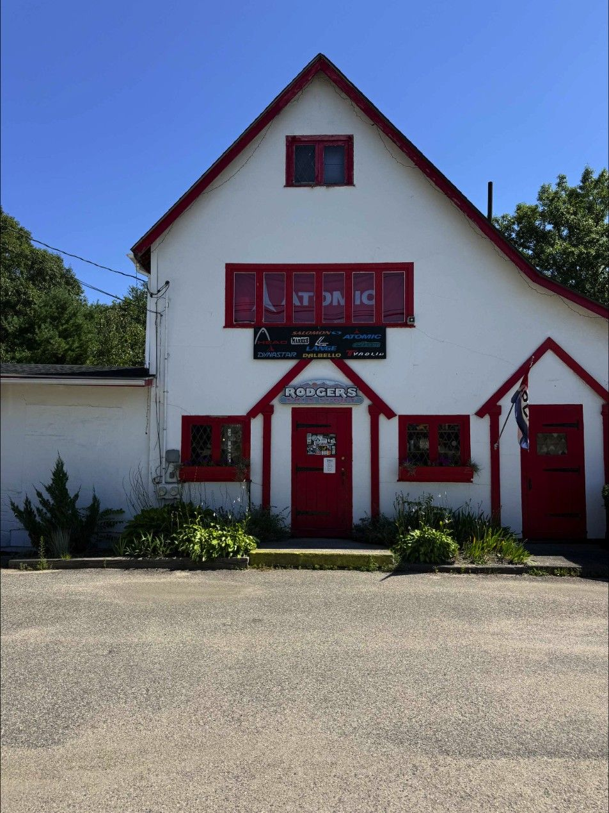

Our story
A few pairs of skis sold from a Datsun pickup at Plymouth State in 1974. Today, two stores and one of the largest specialty ski retailers in the East.
Our story, year by year
A few pairs of skis sold out of a Datsun pickup at Plymouth State College.
David and Helen open the first Rodgers Ski Outlet in Lincoln, NH.
The Scarborough, Maine store opens on Route 1.
Rodgers brings the “snowboarding fad” to the East.
The Mothership Snowboard Shop launches, focused on small, American-made brands.
Ski Magazine recognizes Rodgers as a Gold Medal Shop.
The state-of-the-art Lincoln flagship is built.
New ownership, the same experts, and a bigger vision for both stores.
The people behind the counter
From a kid’s first turns on snow to chasing singletrack or FIS race gates, our team lives the gear we stock.
The hardware
We only sell the best products, curated for quality, performance and mechanical precision.
The service
Our technicians work to exceed expectations. We don’t just fix gear; we optimize it for your specific run.
The access
Through family-focused programs, we make skiing and riding accessible and affordable for the next generation.
The culture
We are active in our communities, pushing people to the peaks.
The people who fit your boots
Meet the staff through their picks; the full staff wall, with names and roles, is being photographed this fall.
Staff picks →

Lincoln and Scarborough
The Lincoln, New Hampshire flagship carries skis, the Mothership snowboard shop, bikes, rentals, the Boot Lab and the tune room. The Scarborough, Maine store is a ski and bike shop with tuning, boot work and the Junior Seasonal Lease; it does not rent equipment or sell snowboards.